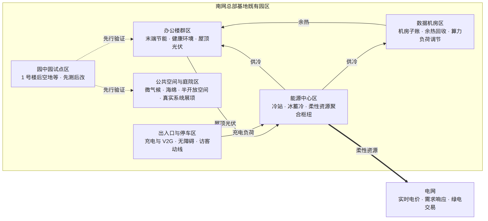
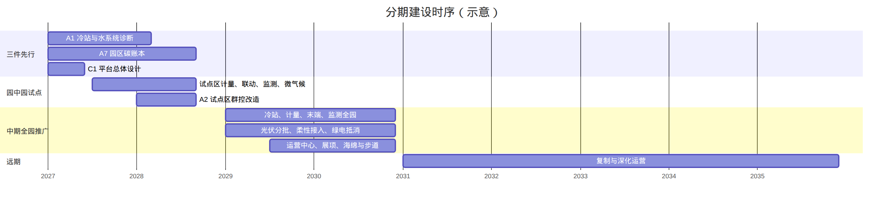

绿色智慧近零碳园区规划
回答四件事：改什么、改到什么水平、空间怎么布、分期怎么建。
近零碳是目标属性；绿色与智慧是两条主专项。
一页说清规划主线
底座一次到位，工程分期落地
- 冷站与机电：诊断—群控—蓄冷接实时电价，不换主机优先
- 数字底座：一个平台、两类功能、四级计量
- 碳账：全园总账 + 办公区 / 机房子账
- 生态与场所：微气候、海绵、无障碍、真实系统展项
- 2028：低碳档 · 园中园试点跑通一个供冷季
- 2030：近零碳档 · 绿色智慧近零碳园区建成
- 冷站能效较基期：2028 ≥10%，2030 ≥15%待核
- 空间：既有格局不变 · 系统重组 · 节点更新
- 三件先行：冷站诊断 · 碳账本 · 平台总体设计
- 路径：园中园试点 → 全园推广 → 内园复制
规划范围 · 期限 · 依据
既有园区全边界
- 办公楼群、冷站与冰蓄冷、数据机房
- 供配电与既有光伏、充电设施
- 道路庭院绿地与信息化系统
- 碳账：全园总账 + 办公 / 机房子账
基期 2027 · 三期推进
- 近期 2027—2028：基线 · 试点 · 低碳档
- 中期 2029—2030：全园推广 · 近零碳档
- 远期 2031—2035：深化运营 · 内园复制
验证场，不是第二曲线
- 总部基地 = 战略资产价值体系验证场
- 能源公司主笔牵头，战略主体是南网
- 不停机分区 · 先测后改 · 一次规划分期建 · 可复制
依据：国家节能降碳与近零能耗相关规范、公司既定安排与调研材料；建设方案 V3 仅作家底与卡点参考。政策文号不在投屏展开。
现状卡点 · 规划怎么应对
尚未建立碳账本；基期以 2027 供冷季实测 为准，基线前降碳率只给台阶、不给绝对值。
- 不停机 → 园中园、分区试点，控制回路与增量设施为主
- 风貌限立面 → 光伏上屋顶/车棚，微气候靠庭院
- 设备未到报废 → 先诊断分档，不换主机优先
- 屋顶光伏有限 → 降碳主力是需求侧节能 + 绿电交易
- 实时电价转向 → 蓄冷策略与交易接口列为近期必做
- 机房口径未定 → 先立总账加子账，再定档
到 2030：绿色 · 智慧 · 近零碳园区
目标属性
2028 低碳档 → 2030 近零碳档。路径：需求侧节能 → 本地光伏 → 绿电交易 → 合规抵消。
能与碳 · 水与生态
冷站高效化、柔性资源接电价；海绵与微气候；室内环境连续达标，节能不以空气品质为代价。
数字底座与运营
一个平台、两类功能；四级计量两用；模型本地化部署，数据主权归南网。
六要素落到专项与指标体系；产出除工程实体外，须可带走方法、数据或规则，供南网内园区复用。
控制性主指标 · 目标年 2028 / 2030
| 指标 | 2028 | 2030 |
|---|---|---|
| 园区碳排放降碳率 | 达低碳档 | 达近零碳档 |
| 碳账本覆盖率 | 100% | 100% |
| 冷站综合能效（较基期） | ≥ 10%待核 | ≥ 15%待核 |
| 蓄冷策略与实时电价 / 需求响应 | 过渡期上线 | 稳态在线 |
| 四级计量 / 预约联动覆盖 | 计量 100% · 试点联动 100% | 计量 100% · 全园联动 100% |
| 平台本地化与数据主权 | 落实 | 落实 |
| 室内环境达标时长 · 监测覆盖 | 试点区达标 / 100% | 全园达标 / 100% |
| 算力开通 · 无障碍 · 外立面大改 | 全员开通 · 排查整改 · 0 | 全员开通 · 100% · 0 |
全表 27 项（控制性 + 引导性）；基期一律待 2027 实测。节能与健康互锁：冷站能效与室内 CO₂ 等达标须同时满足。
既有格局不变 · 系统重组 · 节点更新

拓扑示意，不代表实际方位与尺度 · 能源中心为枢纽，园中园先行验证
- 办公楼群 · 数据机房 · 能源中心
- 公共空间与庭院 · 出入口与停车
- 园中园试点（1 号楼后空地等待核）
- 能源：源—网—荷—储—市场
- 碳：总账 · 两子账 · 三级普惠账
- 智慧：一平台 · 两类功能 · 四级计量 · 运营中心
近零碳与能源 · 绿色 / 高效主路径
需求侧节能
冷站群控、末端联动、机电调优
本地光伏
屋顶 / 露台 / 车棚应装尽装；立面不布置
绿电交易
按近零碳档缺口采购，来源可溯源
合规抵消
控制在标准上限内待核
诊断—分档—改造—调优；不换主机条件下节能潜力约 10%—20%待核。
过渡期 + 稳态期两套策略；约 15 分钟级实时电价接口待核。
机房子账、余热摸底；蓄冷 / 光伏 / 充电 / 算力负荷进柔性资源池。
绿色生态 · 水、微气候、半开放空间
透水 · 雨水 · 中水
- 道路广场透水铺装
- 雨水回用于绿化水景
- 中水回用范围研究
- 试点场地先行
乔木 · 廊道 · 遮阳
- 增补乔木与垂直绿化
- 组织通风廊道
- 室外环境监测入平台
- 以实测验证改善效果
架空层 · 连廊 · 庭院
- 遮阳通风的休憩健身场所
- 1 号楼后空地作首个试点待核
- 不改变建筑外立面
- 为健康、人文提供空间界面
智慧运营 · 一个平台、两类功能

行为联动 · 设备工单 · 资源预约与算力门户 · 碳普惠三级账
四级计量与能碳数据 · 数字孪生运营中心 · 负荷预测与调优模型 · 本地化 · 数据主权归南网
实时电价与需求响应 · 绿电与碳核算 · 南网内其他园区复用接口
普惠 = 人人参与 · 人人受益
不是投资收益，不是产品复制对外服务包。无障碍为标配。
个人—团队—园区三级账
- 通勤、用能、会议、无纸化自动记账
- 园区总账人人可见
- 对接广东 / 广州碳普惠方法学待核
- 积分兑换园区文体与服务
全员开通 · 用量透明
- 办公助手、知识库、会议纪要等
- 申请门槛低
- 与算电协同共用算力底座
- 控制性：全员开通（2028 / 2030）
公平可及 · 规则公开
- 充电、会议、文体、餐饮、共享空间
- 员工 / 外包 / 访客统一预约
- 部分公共空间双碳科普开放待核
- 全域无障碍排查整改
健康可检可验 · 人文风貌延续
对象是可验收的环境与服务
- 楼层监测公示：CO₂、PM2.5、温湿度等接入平台
- 新风与净化：与冷站诊断同步；节能与健康互锁
- 节律照明与工位微环境：与末端联动同步实施
- 健身休憩与心理健康：边角与半开放空间承载
- 健康数据只用于改善与验收，不用于个人考核
场所品质 · 真实系统展示
- 针灸式更新：入口、连廊、庭院、灰空间；外立面大改 = 0
- 真实系统展项：运营中心、冷站、碳账、柔性调控实况
- 不建独立展馆、不做大屏秀
- 节事与碳普惠、资源预约打通，形成日常获得感
重点项目库 · 投屏看包不看行
8 项
冷站诊断与群控 · 蓄冷接电价 · 光伏 · 柔性资源 · 机房余热 · 碳账 · 绿电抵消
3 项
庭院微气候试点 · 海绵与雨水中水 · 绿量与步行系统串联
5 项
平台总体设计 · 四级计量 · 预约联动 · 数字孪生运营中心 · 负荷预测模型
9 项
碳普惠 · 算力门户 · 统一预约 · 无障碍 · 环境监测 · 新风照明 · 展项动线等
投资额不在本规划列；规模与资金在预可研与各项目任务书确定。近期标注「先行」的三项最先启动。
三件先行 · 互为输入
冷站与水系统深度诊断
- 覆盖 2027 完整供冷季
- 分项基线 · 设备分档 · 楼宇改造顺序
- 输出指标 6、7 基期值，支撑 A2
园区碳账本与核算体系
- 总账 + 两子账 · 规则书面化
- 供冷季后形成第一个年度账
- 支撑指标 1—3 与 A8 抵消结构
平台总体设计与数据主权
- 预可研批准后半年内完成
- 接口清单 · 计量布置 · 安全分区
- 避免分头建设后的二次集成
预可行性方案批准后即行组织。园中园试点候选：1 号楼后空地及邻近楼宇待核。
近期试点 · 中期建成 · 远期复制

三件先行 · 园中园 · 计量与联动试点 · 碳普惠 / 算力 / 无障碍上线 → 低碳档
全园推广 · 光伏分批 · 柔性接入 · 绿电抵消 · 运营中心与展项 → 近零碳档
模型迭代 · 储能 / V2G / 直流比选 · 内园复制 · 研究碳中和路径
近期建设节奏 · 园中园验收口径
- 2026 Q4：预可研 · 资料核验 · 三件先行任务书
- 2027 上：A1 进场 · A7 立账 · C1 设计 · 光伏普查 · 无障碍排查
- 2027 下：试点区计量 / 联动 / 监测 / 微气候 · 碳普惠与算力门户
- 2028 上：基线报告 · 群控试点 · 首批光伏 · 柔性清单
- 2028 下：试点供冷季验收 · 年度碳账 · 低碳档校核
可停机 · 可计量 · 可复制 · 可验证
- 集中实施：C2、C3、D5、D6、A2、B1
- 时段：2027 下半年 — 2028 供冷季
- 验收：完整供冷季实测数据
- 节能与健康指标同时达标
- 做法直接输入中期全园推广
实施要点 · 今日拟确认
- 实施主体：南网总部；能源公司主笔与实施牵头
- 联合工作组：总部相关部门 + 能源公司 + 园区运维
- 智能运营中心设能碳运营岗；规程按企业技术标准固化
- 每年碳账公示；每供冷季评估冷站与试点
- 资金：规划不列投资额，按程序衔接分阶段预算
- 中期起选一个南网内园区开始复用方法与平台
- 1是否确认绿色 / 智慧 / 近零碳三条主线与六要素落专项的结构？
- 2是否锁定三件先行（A1 · A7 · C1）及园中园试点路径？
- 3控制性主指标台阶与「节能—健康互锁」是否作为验收底线？
- 4机房进出账、实时电价细则、零碳标准台阶等【待核】项，是否按预可研前核销？
绿色智慧近零碳
一次规划 · 分期建设 · 成果可复制
本地打开 slides/index.html 即可投屏。
← → / 空格 / PgUp PgDn 翻页 · F 全屏